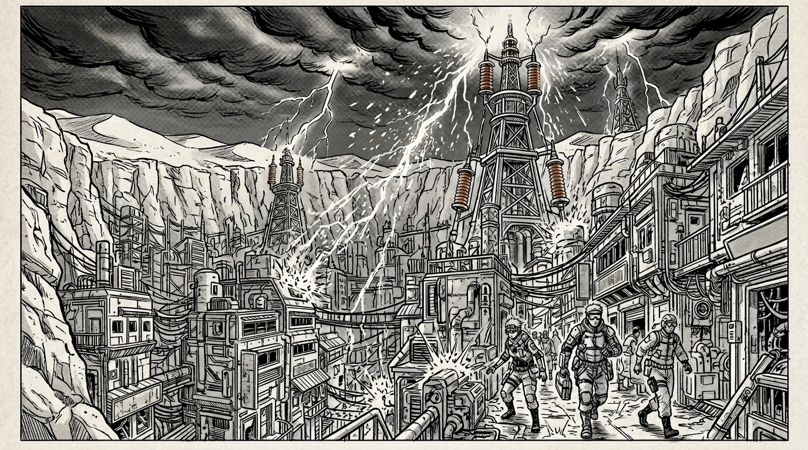
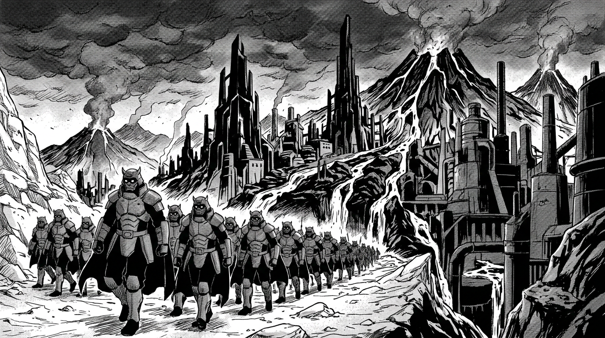

Город без богов

Тектрон не верит в богов. Тектрон верит в Код — набор физических законов, описывающих поведение маны, — и в руки, способные этот Код переписать. Где другие фракции строят храмы, Тектрон строит лаборатории. Где другие молятся — Тектрон паяет.
Столица, Нео-Дюна, спрятана в глубоком каньоне посреди великой жёлтой пустыни. Сверху — бесконечный песок и раскалённый воздух. Внизу — совсем другой мир. Металлические многоэтажки, обвешанные проводами, как ёлки гирляндами. Неоново-синие вывески мерцают в вечном полумраке каньона. Искры сыплются из стыков. Пахнет озоном, машинным маслом и жареным мясом из уличных забегаловок.
Над городом возвышаются Громоотводы — гигантские медные вышки, притягивающие молнии из искусственно созданных грозовых туч. Каждый разряд — чистая энергия, питающая город. Когда молния бьёт, весь каньон на секунду заливается белым светом, и тысячи горожан даже не поднимают головы.
Тектроном управляет Совет Директоров — не аристократы, не генералы, а корпоративные боссы. Строгие костюмы с неоновыми вставками, кибернетические глаза, аугментированные конечности. Они выглядят как люди, но некоторые из них больше машина, чем плоть.
Обычные горожане носят комбинезоны с обилием карманов, защитные шарфы-арафатки от песчаных бурь и механические протезы. Потерял руку на производстве? Не беда — прикрутил стальную и вернулся к станку. Воины Тектрона — Инфорсеры — не носят классическую броню. Их защита — экзоскелеты, питающиеся от колец электричества: массивные, угловатые, с тяжёлыми ботинками для заземления и металлическими перчатками, бьющими током.
За стенами каньона простираются Ржавые пустоши — кладбище машин, гигантских шестерней и забытых механизмов. Маги Земли швыряют здесь тонны металлолома, маги Электричества намагничивают обломки, превращая их в смертоносные вихри. Именно тут проходят подпольные бои — единственное развлечение, на которое Совет закрывает глаза.
Кузнеца, создавшего первые кольца, в Тектроне почитают не как мудреца и не как бога — а как Первого Инженера. Того, кто написал первую строчку Кода.
Слабость сжигается

Империя Игнис не извиняется. Не объясняет. Не просит разрешения. Она приходит, берёт то, что ей нужно, и уходит, оставляя за собой пепел. Так было столетиями. Так будет всегда — по крайней мере, в это верят те, кто носит обсидиановую броню.
Столица — Багровый Горн — построена внутри и вокруг цепи активных вулканов. Небо навсегда затянуто густым чёрно-красным пеплом: солнца здесь почти не видно, и жители — бледные, с вечно красными глазами от раздражения — носят защитные очки-гогглы как обязательный элемент одежды. Архитектура — брутальная, индустриальная. Чёрные обсидиановые шпили, чугунные трубы, извергающие пар и огонь. Реки лавы текут по специальным каналам, служа транспортными артериями и системой отопления.
Всё здесь грубое, практичное, огнеупорное. Горожане одеты в плотную парусину, кожаные фартуки, толстые перчатки. Цвета — угольно-чёрный, багровый, ржавый. Воздух пахнет серой и раскалённым железом.
Воины Игнис — это машина, перемалывающая всё на своём пути. Тяжёлая пластинчатая броня из вулканического стекла и тёмного металла. Шлемы в форме демонов и драконов со встроенными респираторами. Плащи из огнеупорных материалов, способных выдержать прямое попадание огненного заряда. Генералы носят доспехи с раскалёнными рунами, от которых струится пар, и накидки из шкур пепельных волков — хищников, живущих на вулканических склонах.
Империя верит в Вечное Пламя — культ, согласно которому мир погряз в стагнации, и только Огонь способен «очистить» его, переплавить, как руду, и создать нечто новое. Слабость — грех. Поражение — позор хуже смерти. Проигравших не утешают — их забывают.
В самом сердце Багрового Горна, по слухам, расположена некая Кузня — гигантский кратер, окутанный жаром и секретностью. Что именно там куют — не знает никто за пределами Империи. Ходят легенды о том, что Кузня — это место, где перековывается сама судьба мира. Но легенды Игнис всегда звучат величественнее, чем правда.
Или нет?